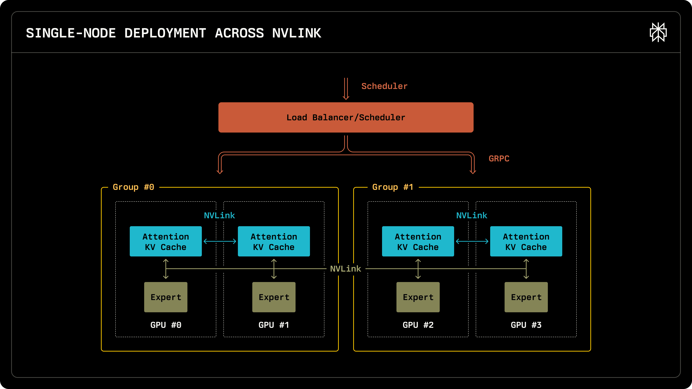
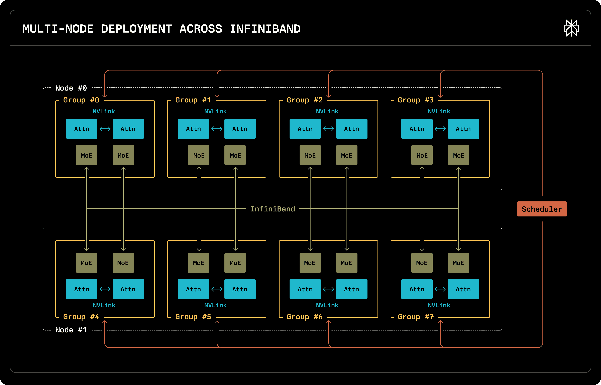
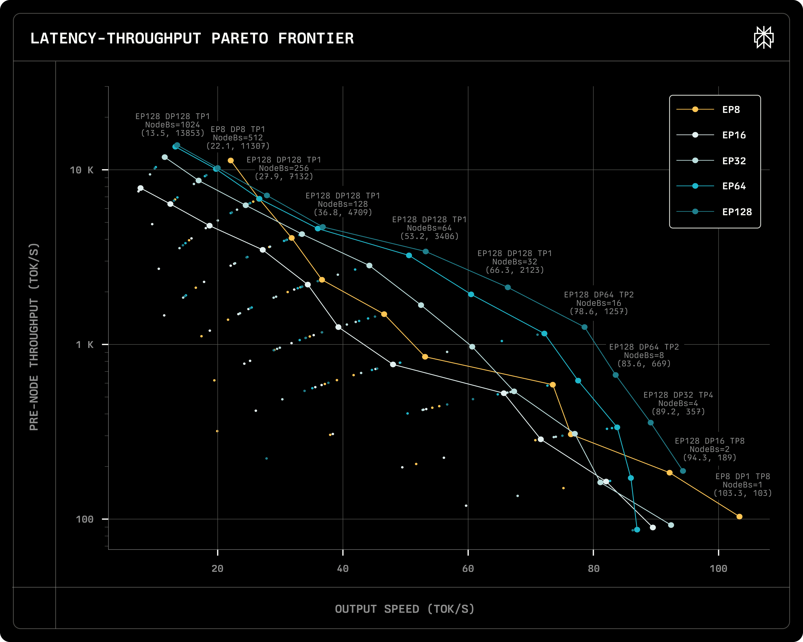
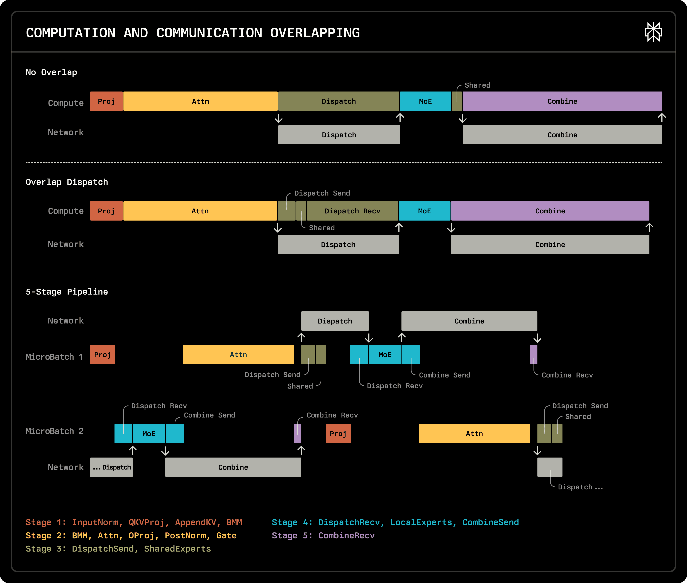
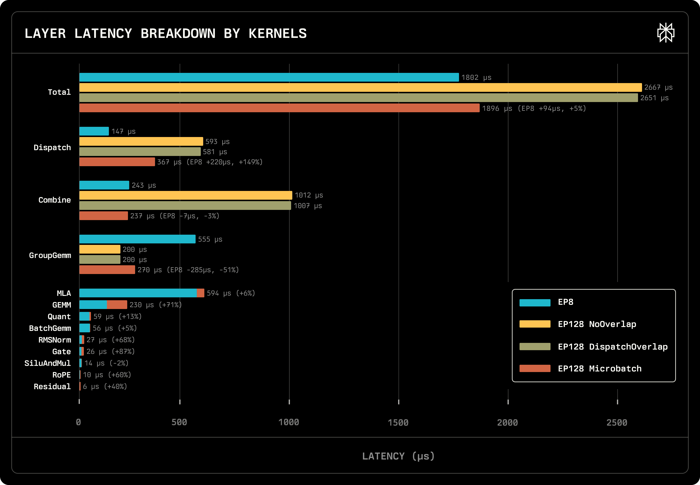
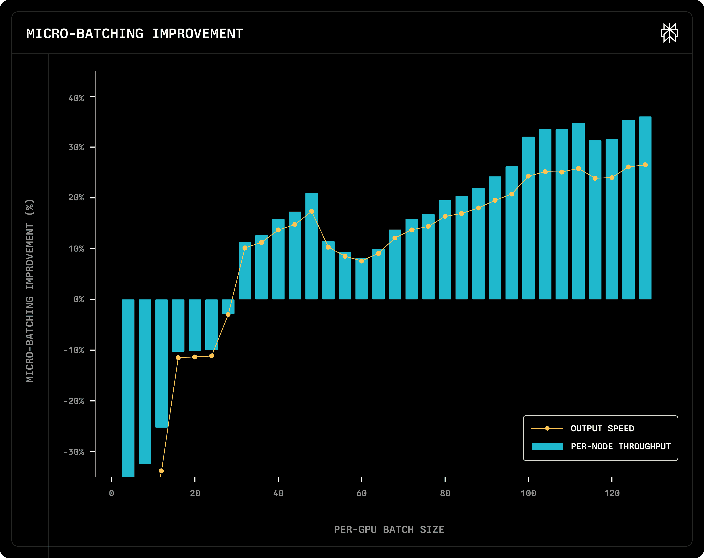
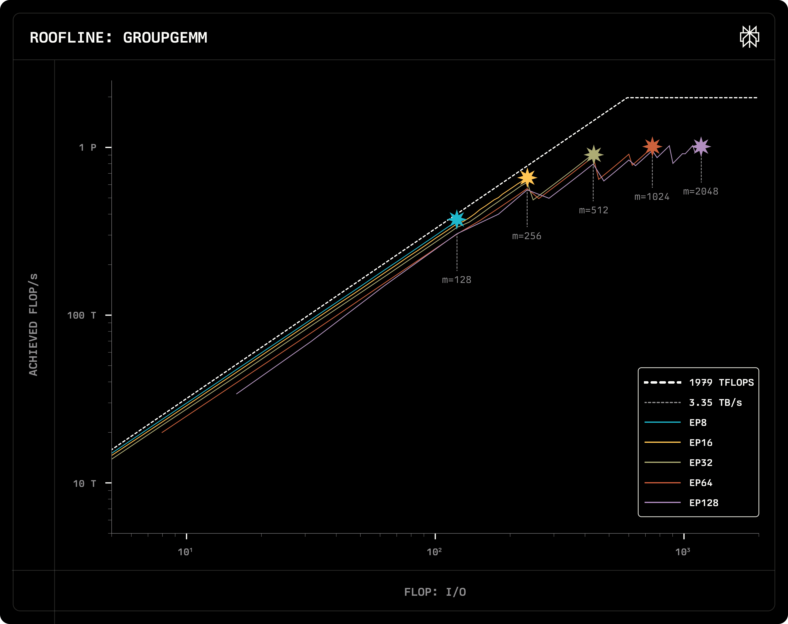
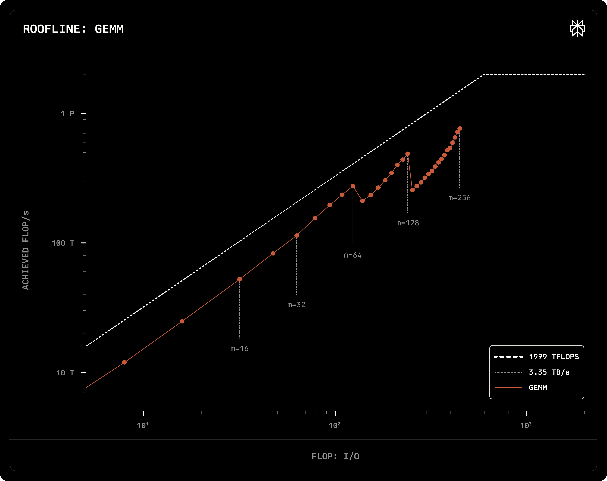
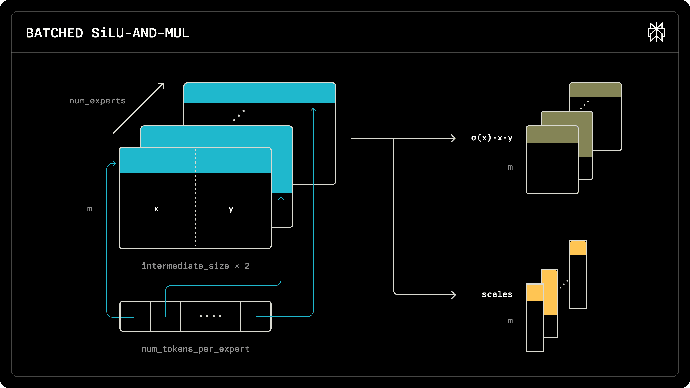

Latency与throughput常被当作不可兼得：加batch抬吞吐却加延迟，加张量并行降延迟却削副本、把吞吐带下去。Perplexity的这份工程总结给出一个反直觉却好用的结论：对DeepSeek-V3/R1这种MoE，只要把expert摊开到更多GPU/多节点，大多数场景能同时拿到更高的吞吐和更低的延迟，因为每token只激活37B/671B，『摊得越宽、单卡显存带宽压力越低』。
本文是其对DeepSeek 671B部署的完整技术拆解：DP/TP/EP怎么组合、单节点(8×H200)对多节点(至多16×H100)在Pareto frontier上的实测差异(EP128在同等输出速度下吞吐可达5×)，再到Dispatch/Microbatch重叠、Roofline分析与量化/FlashInfer/CUDA-Graph/MoE-router一系列落地斟酌。
换到多数系统，延迟与吞吐是打架的两难(加batch涨吞吐也涨延迟;把张量并行加大会降延迟却减副本、掉了吞吐)。但Perplexity用自家部署证明：对DeepSeek-V3/R1这类MoE，大多数场景里『上更多GPU、多节点部署』能同时拿到更高吞吐与更低延迟。核心原因不是玄学，而是MoE的每个token只激活37B参数(全文671B)，专家天然可以摊到多块卡上，摊得越开、每卡的显存带宽压力越低。

因为expert数量很多(expert 256个、各自很小)，模型必须摊在多设备上。文章比较两种：单节点8×H200与最高16台机器共8×H100的多节点。二者的实现都基于Data Parallelism(自家请求调度器驱动)：起多个相互独立的推理engine实例，各自维护请求;调度器经GRPC与引擎交互、尽量均匀派发请求，并做KV reuse：把带部分相同前缀的请求送到缓存里已有该前缀的机器。引擎实例不跨节点，可选TP把attention分到设备。单节点内用NVLink、多节点用InfiniBand来派发与回收专家。

单节点形态在小batch下延迟最好，负载一高性能就掉得快。部署上每个node一个pod、跑多engine实例;分布式通信由PyTorch建立、NVSHMEM初始化，通信走自定义CUDA kernel(之前博客讲过、已开源pplx-kernels)，两形态代码几乎一致、按当前fabric选kernel。
张量并行(TP)：通常用于降每卡显存与计算、从而降延迟。沿行/列切QKV/O等投影、按head切attention。LLaMA式架构（attention+MLP线性都可用TP无重复计算）很理想,但DeepSeek的MLA用不到这一好处:MLA先把q/kv压到潜向量(kv_a_proj)，再kv_b_proj为每个head展开;所有head共享同一个latent → latent无法TP切,每个TP rank都要复制kv_a_proj/kv_b_proj的参数与计算、KV cache也各存一份。TP依旧在需要高输出速度时省一部分计算,仍值得。
专家并行(EP)：DeepSeek MoE层有256个routed expert + 1个共享expert;每个token被派到8个routed expert加权求和，外加一定算一遍shared expert。EP是切MoE层的常规做法:每张卡管256/EP个routed expert、并保留一份shared expert。相比TP，EP能把计算铺到更多GPU、降每卡计算与内存。计算前所有GPU要一次AllToAll把token派到对应专家所在卡;算完再一次AllToAll收回结果并加权求和：作者用NVSHMEM写了优化的Dispatch与Combine两个AllToAll kernel(已开源)。
数据并行(DP)：EP能把计算铺到128+ 卡，但MLA算不了;这时上DP：每个DP group持整份MLA、吃不同输入独立算。MLA的DP与TP可组合(一个DP group再拆成多个TP rank)；MoE层的EP再与MLA的DP/TP组合，且EP=DP×TP。例：16机上EP128 DP32 TP4 = routed expert摊128卡、每4卡一组DP、共32个独立DP group。

671B放不进单台8×H100(80G×8)，但8×H200(141G×8)能整机装下。EP8 DP8 TP1下每卡内存约100GB、留约40GB给KV与中间结果。每个token占70,272字节KV;按每请求5k token估，每卡能塞约100个请求。实验用H200单机对最多16台H100，扫TP∈{1,2,4,8}×每卡batch∈{1..128}，KV长5000、按MTP每请求query长2、保守接受率60%。
图上横轴单请求输出速度tokens/s、纵轴对数刻度每机吞吐。极需高输出速度时，单节点EP8 DP1 TP8 + batch=1能 >100 tok/s但吞吐极低(等同输出速度;批里只有2个token、最多派16个expert、激活≤57B)。80-40 tok/s区间，随吞吐涨输出速度明显掉;同一输出速度下EP128比单节点最高约5× 吞吐。
背后机制：单节点batch涨→激活expert涨(batch=1时每卡平均2×8/8=2个;batch大到时256/8=32个) → 每卡要读更多参数 → 显存带宽压力大增。decode本就带宽瓶颈，故单节点加batch显著掉输出速度。四种多节点配置(EP16/32/64/128)对比显示：EP越高，Pareto frontier同时向吞吐与输出速度双升方向移。EP128每卡只2个expert，带宽压力小 = 用更大EP等于变相买到更多带宽;每卡batch<64 时加 batch 对专家计算速度影响不大，故 EP128 下加 batch 不明显掉速。
有趣的是每卡64请求的大batch下单节点吞吐反而略高：一是NVLink带宽高于InfiniBand，另一是作者实现限制。另因显存，EP8 DP8 TP1到不了每卡128 batch，所以追求高吞吐时多节点仍更优。

专家并行里MoE通信时GPU会空转;要拿与数据无关的计算去填。作者把shared expert放每张卡上 → 它不需要AllToAll，可在Dispatch-Send之后立刻算、再等Dispatch-Recv，叫Dispatch Overlap，实现直接、适用范围广，能把shared expert时间藏掉。
为进一步叠，用了DeepSeek论文的micro-batch:把单Transformer层拆5段：(1) InputNorm/QKVProj/AppendKV/BMM (2) BMM/Attn/OProj/PostNorm/Gate (3) Dispatch-Send+Shared Expert (4) Dispatch-Recv+MoE+Combine-Send (5) Combine-Recv。前3个dense层用整个batch;后面58个MoE层把batch均分两micro-batch、错开3段交替跑(两micro-batch无依赖，Dispatch-Send后与Combine-Send后即可切去另一个batch)。
效果以H100、TP1、每卡batch 128、query 2、KV 5000实测单MoE层总时及各类kernel占比:NoOverlap 2667μs;DispatchOverlap 2651μs只省0.6%;MicroBatch 1896μs、提速29%。其中Dispatch 593→367μs、Combine 1012→237μs。但算的kernel因把128拆两64总执行时间变长，于是通信省下1001μs、总时长只降了771μs：所以microbatch不一定总是赚:batch<32 时 MicroBatch 反而掉 5-40%，batch≥32 才提升 10-35%。

同TP1 batch128 query2下：EP8 MicroBatch总1802μs、略少于EP128的1896μs。除了microbatch带来的kernel变慢，主差在GroupGEMM与Dispatch/Combine：EP8的GroupGEMM 555μs vs EP128的270μs(减半,这是多节点的核心优势)；但EP128通信多了213μs、把优势吃回去不少：作者测通信kernel只到InfiniBand带宽一半，是继续优化点。GEMM亦因microbatch多95μs，未到最优。

Roofline模型横轴算术强度(FLOP/内存字节)、纵轴实现性能;H100 FPGA? 上界FP8 1979 TFLOP/s(水平线)、显存带宽3.35TB/s(过原点斜率);两线夹出compute/memory-bound上限。GroupGEMM:g组、第i组m_i个token做 [m_i,k]×[k,n];m相等时FLOP=2·g·m·k·n、IO=g(mk+nk+mn)。DeepSeek每token到8专家;batch128 query2 EP128 DP128时每expert平均收128*2*8*128/256=1024 token。不同EP的roofline(用DeepGEMM测EP{8..128}×batch1..128)几乎重合 → GroupGEMM取决于总token数g·m。star对应每卡batch128:EP越高(EP128 DP128) 每expert token m越大(EP8 m=128→EP128 m=2048)→ 算术强度升 → 多数情形memory-bound下m越大越强。

GEMM(指QKV/O等线性):FLOP=2mkn、IO=mk+nk+mn;随batch涨m→算术强度涨→更优;microbatch把m变m/2 → 两个小GEMM之和反而比一个大的用时更久：这正是microbatch不是免费的原因。MTP:把query长从1提到2 = m×2,抬GEMM/MLA效率;MLA的roofline若画出来会发现query长显著提MLA效率。

量化:DeepSeek原生FP8 per-block训练。权重静态量化、激活动态量化：scale不按每通道/每矩阵静态算，而沿激活的128向量 / 矩阵128×128 tile算，抑制精度损失。Perplexity CUDA+Triton混拼：性能敏感又少改的(attention/GEMM)用CUDA;少数如activation/normalization/utils用Triton便于快速适配block量化。对Linear/MoE混用DeepSeek的DeepGEMM与自己Triton GEMM(Split-K在低batch更低延迟)。激活scale只沿K聚合、不沿M → kernel只需小幅改动。
SiLU：为支持CUDA graph + block量化 + 动态路由token数做了大改;block量化引入水平归约,但kernel已把hidden切成1024块再细分128算最大绝对值,Triton生高效cross-warp max开销小。MoE在CUDA graph下不能按buffer上限调度，须读路由信息要知道每专家多少token;固定起若干persistent kernel、动态分派。MLA:用FlashInfer;把q_a_proj+kv_a_proj融合成qkv_a_proj(延迟30.2μs→16.7μs);kv_b_proj拆k_b/v_b、写FP8 block-quant BMM。CUDA Graph每batch建一个图;开发AllToAll kernel前用torch.all_to_all_single需要各DP group同batch → 模型运行前allreduce取最大batch再全体padding，有三个缺点;换成自研AllToAll kernel后无需同batch。MoE router在Triton实现(带索引的modified sort)，Mixtral是DeepSeek路由的特例(Top-K组=全专家组)。

未来:最重要的是Prefill Disaggregation：prefill与decode计算特征很不同。MLA在decode用Matrix Absorption降FLOP;prefill先把latent投到K/V再走标准MHA更佳;同卡跑时用chunked prefill减对decode输出速度影响。MoE层decode要EP/DP尽量大以抬每专家输入token从而提GroupGEMM;prefill token已经够多、GroupGEMM已compute-bound、可用较小EP/DP。再有AllToAll只达IB带宽1/3(待续优化);树状EAGLE类speculative提接受长度;GEMM距极限仍远;GB200 NVL72是MoE的大机会与挑战。
结论:多节点MoE部署做到密集模型做不到的事：同时把吞吐与延迟都往上推。跨更多GPU摊开experts→降低每卡显存带宽压力→更快且更高吞吐。EP128在同等输出速度比单节点高可达5×;microbatching这类重叠让多节点通信开销最多减40%;自研AllToAll + 自优化kernel让671B参数能高效n部署。
本文为Perplexity工程/研究部门博客(官网内容即译文蓝本,交互图以静态贴出),引用DeepSeek-V3报告、DeepSeek推断系统概览、Megatron论文、EAGLE等原文,数字以文中给出为准;图注为解读性示意,非逐字原文caption。(对部署系统/MLA/EP并行调度与通信kernel感兴趣的可跟进其开源pplx-kernels与上方refs。)
参考：https://www.perplexity.ai/hub/blog/lower-latency-and-higher-throughput-with-multi-node-deepseek-deployment